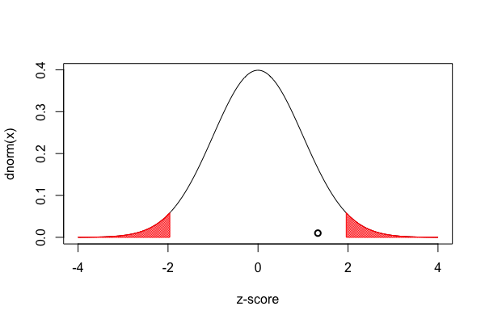
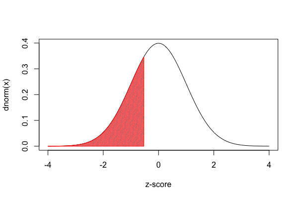
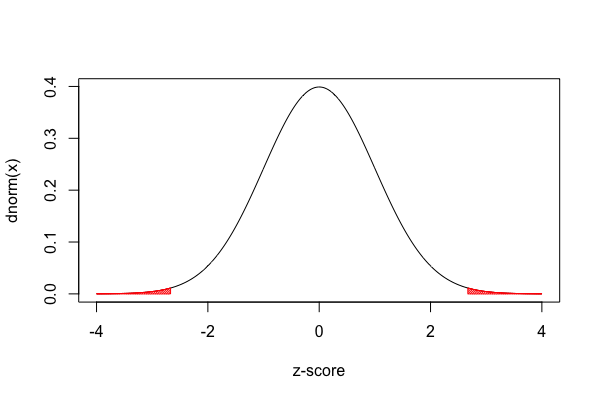
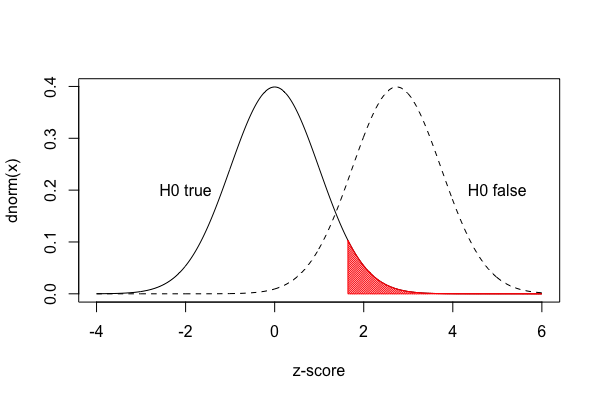
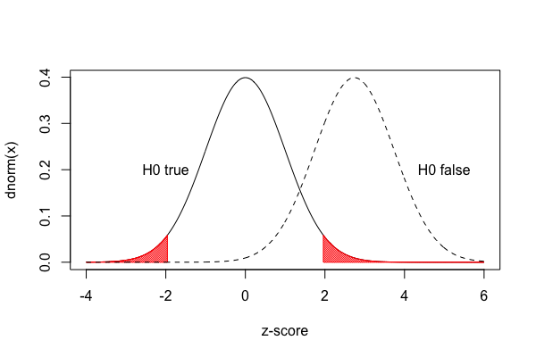

Week 4 lecture notes - PSYC 5316
Let's begin with an example. A researcher claims that on a test of open-mindedness, the population mean for adult men is at least 50. As a check on this claim, imagine that 10 adult males are randomly sampled and their scores on the measure are:
scores = c(25, 60, 43, 56, 32, 43, 47, 59, 39, 41)
A quick computation (mean(scores)) shows that \(\overline{x}=44.5\). Does this make the claim that \(\mu \geq 50\) unreasonable?
Note that we can address this question using confidence intervals. To construct a 95% confidence interval, we compute the following:
\[ \overline{x}-c\frac{s}{\sqrt{n}}, \overline{x}+c\frac{s}{\sqrt{n}} \]
The relevant R commands for this problem would be:
xbar = mean(scores) s = sd(scores) n=length(scores) c = qt(0.975,df=n-1)
Thus, we can easily compute the confidence interval as:
xbar - c*s/sqrt(n) # lower limit xbar + c*s/sqrt(n) # upper limit
Hence, we are 95% confident that the true population mean \(\mu\) is somewhere between 36.3 and 52.7. As a result, it is not unreasonable to believe \(\mu\geq 50\).
Confidence intervals can be used to test hypotheses in this way. However, there is a different way that is a bit more common in the behavioral sciences. The method we will describe today was originally developed by Neyman and Pearson in 1933.
Hypothesis Testing (Neyman-Pearson)
The goal in NP hypothesis testing is to find a decision rule about whether to accept or reject a null hypothesis. If one decides to reject the null hypothesis, the researcher concludes that the alternative hypothesis is accepted.
Example: in the preceding example, our null hypothesis would be \(H_0:\mu<50\), and our alternative hypothesis would be \(H_1:\mu\geq 50\).
- note: the null hypothesis \(H_0\) is typically set to be the opposite of what you predict.
Since NP hypothesis testing involves making a decision, there is always a possibility of making an error.
Definition: A Type I error occurs when we reject a true null hypothesis. The probability of making a Type I error is \(\alpha\), which we often call the level of significance.
Now, we are in a position to define exactly how NP hypothesis testing works.
The NP Hypothesis Test
Let \(\mu_0\) be some specified value and consider the goal of testing \(H_0:\mu\geq \mu_0\) such that the Type I error probability is \(\alpha\). Then we compute:
\[ z=\frac{\overline{x}-\mu_0}{\sigma / \sqrt{n}} \]
Decision rule: we reject the null hypothesis \(H_0\) if \(z\leq c\), where \(c\) is the \(\alpha\) quantile of the standard normal distribution.
Example 1
Let's perform an NP hypothesis test on the data above. Suppose that we know that the population standard deviation is \(\sigma=12\).
- Step 1 – set \(H_0: \mu\geq 50\) (so \(\mu_0=50\)).
- Step 2 – set \(\alpha=0.05\) (this is pretty common)
- Step 3 – compute \(z\):
\[ z=\frac{\overline{x}-\mu_0}{\sigma / \sqrt{n}} = \frac{44.5-50}{12 / \sqrt{10}} = -1.45 \]
- Step 4 – compute \(c\) (this is often called the "critical value")
qnorm(0.05)
- Step 5 – compare \(z\) to \(c=-1.645\). Because \(z=-1.45\) is greater than \(c=-1.645\), we fail to reject \(H_0\) and conclude that \(\mu \geq 50\).
These steps are a little easier to digest if we can visualize how everything fits together graphically. Fortunately, this is not too hard to accomplish in R.
shadedTails <- function(from, to, density, ..., col="red"){
y_seq = seq(from, to, length.out=500)
d = c(0, density(y_seq, ...), 0)
polygon(c(from, y_seq, to), d, col=col, density=50)
}
x=seq(-4,4,0.01)
plot(x,dnorm(x),type="l",xlab="z-score")
shadedTails(-4, -1.645, dnorm)
points(x=-1.45, y=0.01, lwd=2)
The first bit of code defines a convenient function for us to use for the remainder of the lecture. The second bit produces a plot with a red shaded region and a circle. The red region is the "rejection region", and the circle represents our sample. Notice that the sample is outside the rejection region, which tells us that we don't reject the null hypothesis.

Variations
There are two variations to the hypothesis testing procedure described above:
- testing \(H_0:\mu \leq \mu_0\) – we reject \(H_0\) if \(Z\geq c\), where \(c\) is the \(1-\alpha\) quantile of a standard normal distribution
- testing \(H_0:\mu = \mu_0\) – we reject \(H_0\) if \(Z\leq -c\) or \(Z\geq c\), where \(c\) is the \(1-\alpha/2\) quantile of a standard normal distribution.
Example 2
Suppose SAT math scores are normally distributed with \(\mu=580\) and \(\sigma=50\). You have developed a new training course and want to empirically determine its efficacy. Your sample of 20 students attains an average score of 610. Is this a significant increase?
- Step 1 – set \(H_0: \mu \leq 580\) (we hypothesize an increase, so our null is opposite of this; a decrease)
- Step 2 – set \(\alpha=0.01\) (we want to be really sure!)
- Step 3 – compute \(z\):
\[ z=\frac{\overline{x}-\mu_0}{\sigma / \sqrt{n}} = \frac{610-580}{50 / \sqrt{20}} = 2.68 \]
- Step 4 – compute \(c\) (this is often called the "critical value")
qnorm(0.99) # this is because we want to be in upper 1%
- Step 5 – compare \(z\) to \(c=2.33\). Because \(z=2.68\) is greater than \(c=2.33\), we reject \(H_0\) and conclude that \(\mu \geq 580\).
The visualization of this hypothesis test is as follows:
x=seq(-4,4,0.01) plot(x,dnorm(x),type="l",xlab="z-score") shadedTails(2.33, 4, dnorm) points(x=2.68, y=0.01, lwd=2)

Example 3
Scores on a memory test are normally distributed with \(\mu=50\) and \(\sigma=12\). A sample of 16 participants is given an herbal supplement for 90 days. Afterward, each participants takes the memory test. The average score for the 16 participants was \(\overline{x}=54\). Did the herbal supplement group score significantly different from the population?
- Step 1 - set \(H_0\):μ=50$
- Step 2 - set \(\alpha=0.05\)
- Step 3 - compute \(z\):
\[ z=\frac{\overline{x}-\mu}{\sigma/\sqrt{n}} =\frac{54-50}{12/\sqrt{16}} = \frac{4}{3} = 1.33 \]
- Step 4 - compute \(c\) (the \(1-\alpha/2 = 0.975\) quantile)
qnorm(0.975)
- Step 5 – compare \(z\) to \(c=\pm 1.96\). Because \(z=1.33\) is not greater than \(c=1.96\) or less than \(c=-1.96\), we fail to reject \(H_0\), and conclude that \(\mu\) is not significantly different from 50.
Again, we can visualize this as follows:

Hypothesis Testing via \(p\)-values
An alternative method of hypothesis testing uses \(p\)-values. This method probably first appeared in a book of Deming (1943).
Definition: the \(p\) value is the probability of making a Type I error if we use the observed value of \(Z\) as our critical value.
We can integrate this idea with NP hypothesis testing by setting the following decision criterion:
Decision: we reject \(H_0\) if \(p<\alpha\)
Example: consider again our opening example of open-mindedness, where we were testing the null hypothesis \(H_0:\mu\geq 50\). Suppose we got a sample of 10 scores for which \(\overline{x}=48\). Suppose further that \(\sigma=12\). Then
\[ z=\frac{43-50}{12/\sqrt{10}} = -0.53 \]
If we use this value of \(z\) as a critical value, we would get the following picture:
x=seq(-4,4,0.01) plot(x,dnorm(x),type="l",xlab="z-score") shadedTails(-4, -0.53, dnorm)

Suppose \(H_0\) is true. From the figure, we can see that we would reject \(H_0\) (and thus make a Type I error) whenever our sample mean fell into the red region, which is the region for which \(z\leq -0.53\). Thus, \(\alpha\) (the probability of making a Type I error) would be \(P(z\leq -0.53)\).
pnorm(-0.53)
As we can see, this probability is \(p=0.298\).
Further, we would NOT reject \(H_0\), since 0.298 is greater than 0.05.
Computing \(p\)-values
Cases 1 and 2 are similar to what we just did above.
Case 1 – testing \(H_0:\mu\geq \mu_0\)
\[ p=P\Biggl(Z\leq \frac{\overline{x}-\mu_0}{\sigma/\sqrt{n}}\Biggr) \]
Case 2 – testing \(H_0:\mu\leq \mu_0\)
\[ p=P\Biggl(Z\geq \frac{\overline{x}-\mu_0}{\sigma/\sqrt{n}}\Biggr) \]
Case 3 – testing \(H_0:\mu=\mu_0\) In this case, you must take into account that the critical region consists of both tails:
\[ p=P\Biggl(Z\leq -\Biggl|\frac{\overline{x}-\mu_0}{\sigma/\sqrt{n}}\Biggr|\Biggr) + P\Biggl(Z\geq \Biggl|\frac{\overline{x}-\mu_0}{\sigma/\sqrt{n}}\Biggr|\Biggr) \]
Example: Suppose we are testing \(H_0:\mu=15\), and suppose \(\sigma=6\). We take a sample of \(n=16\) and find \(\overline{x}=19\).
Then we can find \[ z=\frac{19-15}{6/\sqrt{16}} = 2.67 \]
By above, the \(p\)-value for this \(z\)-score would be:
\[ p=P(Z\leq -2.67)+P(Z\geq 2.67)=0.0076 \]
x=seq(-4,4,0.01) plot(x,dnorm(x),type="l",xlab="z-score") shadedTails(-4, -2.67, dnorm) shadedTails(2.67, 4, dnorm) pnorm(-2.67)+(1-pnorm(2.67))

Decision: since \(p<0.05\), we would reject the null.
Statistical Power
NP hypothesis testing comes down to making a decision. Thus, there are four possible outcomes:
| Reality | ||
| Decision | \(H_0\) true | \(H_0\) false |
| accept \(H_0\) | correct decision | Type II error (probability \(\beta\)) |
| reject \(H_0\) | Type I error (probability \(\alpha\)) | correct decision |
This brings up two very related definitions:
- A Type II error refers to failing to reject \(H_0\) when \(H_0\) is false. The probability of making a Type II error is labeled \(\beta\).
- Power is the probability of rejecting \(H_0\) when \(H_0\) is false. The probability of this occurring is \(1-\beta\).
Our goal is to maximize power!
computing power
This is actually quite difficult. I'll illustrate the intuition with an example. Suppose \(H_0: \mu\leq 50\), where \(\sigma=10\). We take a sample of size \(n=30\). Compute the power at \(\alpha=0.05\) if \(\overline{x}=55\).
First, note that our sample \(z\) is 2.74.
Consider the following:
x=seq(-4,6,0.01) plot(x,dnorm(x),type="l",xlab="z-score") text(-2,0.2,"H0 true") shadedTails(1.645,6,dnorm) lines(x,dnorm(x,mean=2.74,sd=1),lty=2) text(5,0.2,"H0 false")

As before, the red region refers to \(z\)-scores for which we would reject \(H_0\). The dashed line represents the distribution we would see if \(H_0\) was false, and specifically \(\mu=55\) (our sample mean).
So, power can be computed as follows. By definition, power is the probability of rejecting \(H_0\) if \(H_0\) is false. Note that we reject \(H_0\) whenever our \(z\) score is 1.645 or greater (i.e., in the red region). Note that this equates to a raw score of \(x=\mu+z\sigma = 50+1.645(10/\sqrt(30))=53.00\).
If we assume first that \(H_0\) is false, a score of 53 would equate to a \(z\) score of
\[ z'=\frac{53-55}{10/\sqrt{30}}=-1.095 \]
Thus,
\begin{align*} \text{power} &= P(\text{rejecting }H_0 \mid H_0 \text{ is false})\\ & = P(Z>1.645 \mid H_0\text{ is false})\\ & = P(Z'>-1.095)\\ & = 0.86 \end{align*}
The last of these equalities can be found using the usual pnorm computation.
As a quick exercise, lets see how this would change if we used a two-tailed test instead of a one-tailed test.
First, let's look at the picture:
x=seq(-4,6,0.01) plot(x,dnorm(x),type="l",xlab="z-score") text(-2,0.2,"H0 true") shadedTails(-4,-1.96,dnorm) shadedTails(1.96,6,dnorm) lines(x,dnorm(x,mean=2.74,sd=1),lty=2) text(5,0.2,"H0 false")

This time, to reject the null, our \(z\) score would be either greater than 1.96 or less than 1.96.
These would equate to raw scores of:
\[ z=\mu+z\sigma = 50+1.96(10/\sqrt{30})=53.58 \]
and
\[ z=\mu+z\sigma = 50-1.96(10/\sqrt{30})=46.42 \]
Assuming \(H_0\) is false with \(\mu=55\), these would equate to \(z\) scores of:
\[ z'=\frac{53.58-55}{10/\sqrt{30}} = -0.78 \]
and
\[ z'=\frac{46.42-55}{10/\sqrt{30}} = -4.70 \]
So, the power would be found as
\begin{align*} \text{power} &= P(\text{rejecting }H_0 \mid H_0 \text{ is false})\\ & = P(Z>1.96 \text{ or } Z<-1.96 \mid H_0\text{ is false})\\ & = P(Z'>-0.78 \text{ or }Z'<-4.70)\\ & = P(Z'>-0.78) + P(Z'<-4.70)\\ & = 0.78 \end{align*}As we can see, the power is reduced!